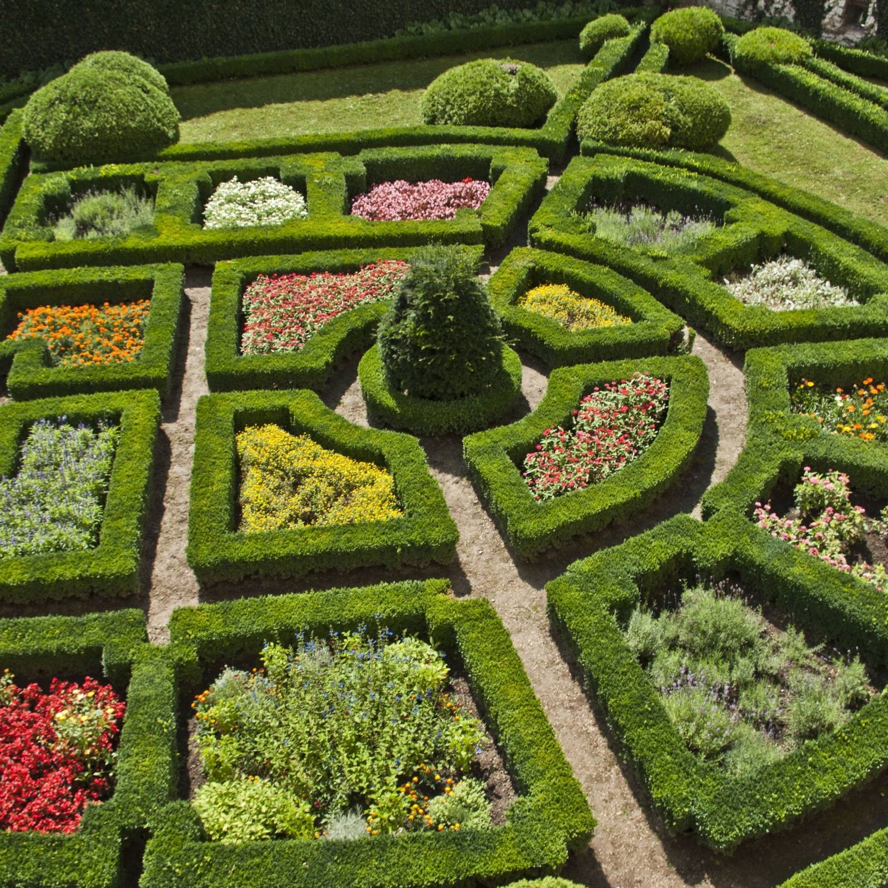
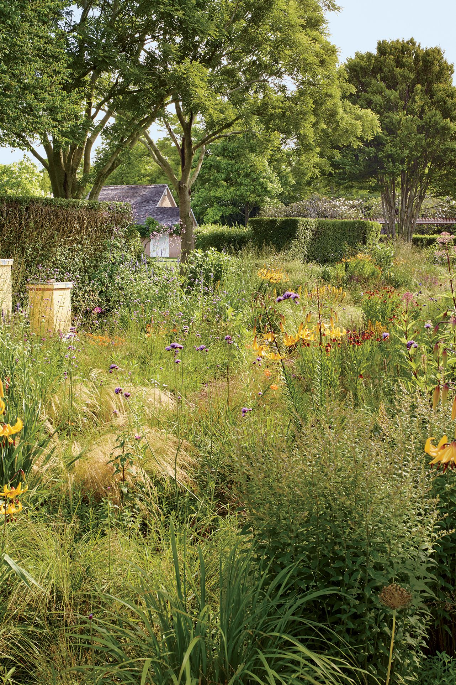
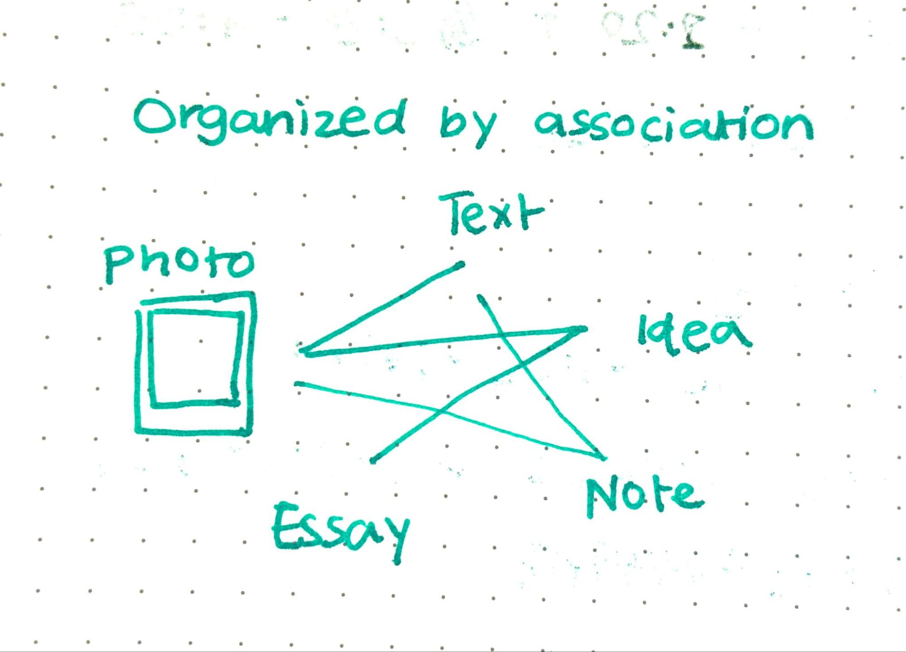
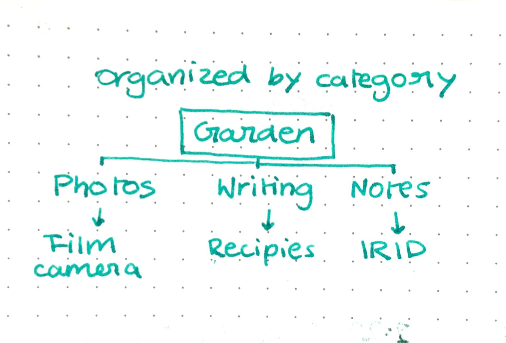
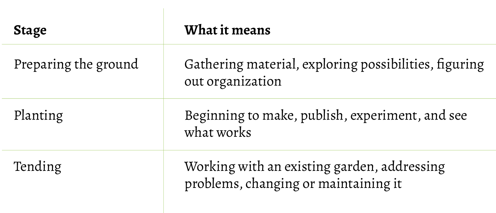
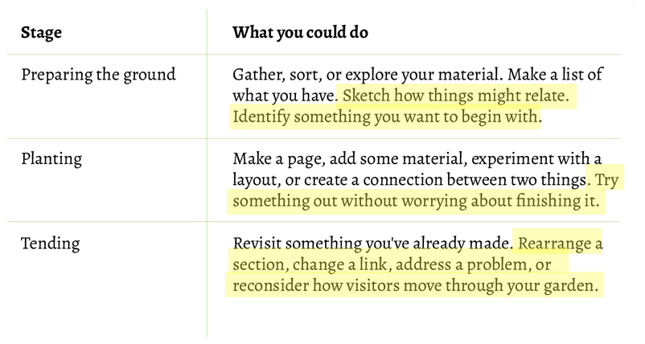

Welcome back ~ Day 2
As you settle in ponder on these questions:
What have you been thinking about or making or noticing since the last time we were together?
What are some theories you have that might help you move along in the process of developing your digital garden.
Today’s outline ap
- LECTURE: on organization and different types of gardens (in terms of structure)
- ACTIVITY: collaging and figuring out what the organization of our gardens could feel like
- BREAK TIME!
- CONVERSATION: see what phase you feel like you are in, and what would help to move on
- WORKING PERIOD
- CHIME OUT
Lecture — how does a garden take shape
Acknowledging structure:
We're still in the beginning phases of figuring out what our gardens might become. Some of us have a lot of material but don't know how to organize it. Others have a clear idea of what they want but aren't sure where to begin.
Today we're going to think about how gardens take shape, how we might organize what we're growing, and how that organization might change over time.
A garden can be planned before anything is planted, but it can also take shape through the act of planting itself.
KEY THEME: organization as something that is not necessarily something that happens before making. It can emerge through making.
Different approaches to gardening
The knot garden

A garden where the structure is carefully considered before planting. Plants are arranged within a deliberate pattern, and the organization is part of the garden's identity.
parallel: A website with intentional navigation, clearly defined sections, and relationships that are established in advance. A lot of the websites we encounter on a daily basis are this way. Government websites, company websites etc
Chaos garden

A garden where things are planted more randomly, without a rigid arrangement. Relationships emerge through growth, proximity, and chance.
parallel: A website that grows through individual posts, notes, experiments, and unexpected connections. (As we were looking for examples of chaos gardens to share, we realized that chaos gardening is something that is more often than not, experienced by the developer of said garden. Because on the surface, most websites, have some sort of containers, keeping it approachable to an outside viewer) E.g. https://tomcritchlow.com/wiki/
A lot of gardens aren't entirely one or the other. You might carefully plan the structure and how to navigate through a garden while leaving the things inside it to grow unpredictably. Or you might begin without any plan, only to discover a structure after you've accumulated the material over time and space.
Plus, a garden might need different kinds of organization at different moments in its life.
Metaphor -> decisions
How do we take these metaphors into praxis? Examples of how a digital garden might be organized, e.g. someone has a collection of photographs, writing, research notes, and references.


None of these are better than the other, both are there to help create relationships between material/content. And the best part is, they can coexist!! You can have a garden that at first glance is ordered by category, but as you click on one thing, it leads to a page that is very much organized by association. That's why, to get started it’s important to think about…
Units in a garden
Think about the kinds of things you want to put on your website. What are they made up of, and how might they fit together?
One way to begin is by identifying the units, or building blocks of your garden.
A “unit” here is a piece of content that carries different kinds of materials together. For example, on Substack, the fundamental unit is a post: a piece of writing which might have an image, hyperlinks and other references or citations.
But heres, the kicker… Units can exist within larger units!!
If youre a photographer, a photograph is one of your smaller building blocks. You might bring several photos together with some writing, maybe some audio to form a project. Later, your several projects could form a larger collection.
Or, if you're making a website about books, one unit might be a book review, a cover image, your writing, and some related references or links. You could then group these reviews by genre, author, date, or even by themes and connections that you discover along the way.
A website doesn’t have to be imaged as one big, complete thing, digital gardening often resists that. It is often built from small units, that fit into other units, that come together in different ways over time.
It’s exciting to think about how a collection of units creates a rich, expansive website. As we add more units, we more than likely, will discover new ways of arranging and connecting them that we hadn’t when we started.
We've been looking at how different gardens are organized. But you don't need to decide on a complete structure right now.
Instead, we're going to spend some time imagining what the organization and the units of your own garden might look or feel like.
Think about what you're working with, how the different parts might relate, and what you want to plan versus what you might leave open to discovery… Maybe consider the two approaches we discussed, and find a new one that you anticipate will work for you
- What does each structure make easier to find or discover?
- Could both approaches exist within the same website?
With that in mind…
Sketching activity (20 min) ap
When we say sketching we mean it in a very general sense.
We want you to start thinking about the units of your garden and representing it in a visual way, or experimenting and iterating on paper with how the different aspects of your unit can live/relate together? Give yourself room to create uncertainties.
A garden's structure can be something you design, something you discover, and something that changes as the garden grows.
Main prompt:
Write down/draw/collage the things you're collecting, making, or thinking about. How might they exist together? Images? Hyperlinks? Videos? audio?
What are some relationships, pathways, or patterns you want to explore?
Make something that represents your garden's possible structure, consider relationships between your materials, objects, entries, etc.
Ways in
- image collage
- word collage
- Open your files, notes, or website and begin grouping, arranging, drawing, or writing about what you find.
Reflection (5 min)
Ask ppl to look at their collage, notes, or arrangement and consider the following:
- How does this compare to the way your material is currently organized?
- What's one action you need to change, arrange, connect, or begin in order to move toward this?
Name one possible next step, write it on a sticky note, and paste it onto the collage.
One thing I could do next to help my garden take shape is…
This should give you a clearer sense of how your garden might develop, and one possible next move.
Break!
Discussion in small groups~
Shift from imagining to identifying the current situation.
We've spent some time thinking about what our gardens might look like and how we want them to grow.
But we're all starting from different places. Some of us are still figuring out what we want to plant. Some have already started. And some have gardens that are growing but need attention.
We're going to take a moment to figure out where we are in that process and talk about what might help us move forward.

Discuss where you are, show each other what you’ve made and talk about what you might need next. Refer to sketches if useful, but not necessary. The person in your group might have an angle of approach you haven’t considered, talk about your confusions, hesitations or excitements.
Work session (30-35mins) ap
Time to work on your garden. Identify where you are and what you need

Reading
Assumptions about time we carry into the class.
Read excerpts from BCH
And ~ Chiming out of the class